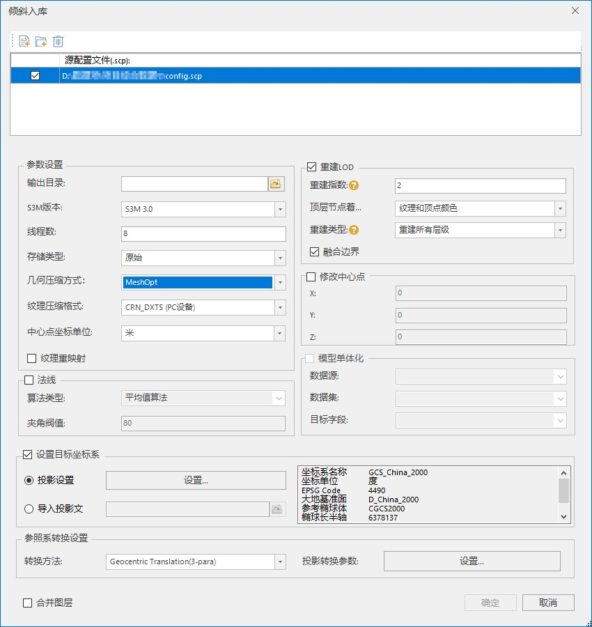

连通性淹没分析效果的制作流程
使用场景
如何基于地形、倾斜摄影数据，在超图产品体系中，更加真实地动态模拟洪水漫延过程？
本文档从数据处理和在WebGL客户端加载，这两个部分进行介绍。其中涉及到的产品包括：SuperMap iDesktop或SuperMap iDesktopX，SuperMap iServer ,WebGL客户端。
制作流程
a、数据处理
1、将倾斜摄影数据生成DSM
- ①使用iDesktop或iDesktopX将倾斜摄影数据加载到球面场景中，并打开一个数据源。
- ②使用三维分析->模型出图里的“生成DSM”功能，对倾斜摄影数据生成一份栅格数据集。其中数据范围是将当前场景中所有图层范围的并集，自定义数据范围是可通过选择面或绘制面方式来设置结果数据范围。
- ③分辨率设置：分辨率越小，数据越精细，效果更准，但是生成数据的过程耗时越久
- ④相机高度设置：比倾斜摄影数据最高点高出几十米即可。
图1
2、倾斜摄影数据需要进行“倾斜入库”操作，便于在webgl端加载使用。
图2
倾斜入库参数设置说明：可以根据数据和需求的不同进行设置。

图3
- ①S3M版本：支持三种S3M版本号，S3M1.0、S3M2.0、S3M3.0，建议使用最新的S3M3.0。如果使用的是10.21之前的WebGL包加载倾斜缓存文件。则倾斜入库时建议使用S3M1.0。
- ②线程数：设置倾斜入库操作的线程数，默认为8。
- ③存储类型：如果是需要给倾斜摄影加密，存储类型必须选择紧凑型。如果将倾斜缓存文件存储到MongoDB中，存储类型必须选择原始型。
- ④几何压缩方式：目前提供四种压缩方式，压缩所需时间由短到长依次为，不压缩、常规压缩、Draco压缩，MeshOpt。
- ⑤纹理压缩：目前支持五种压缩格式：WebP、DXT（PC设备）、CRN_DXT5（PC设备）、标准CRN、 KTX2.0，默认为DXT（PC设备）。对于不同用途的数据，采用不同的纹理压缩方式，可以减少纹理图像所使用的显存数量。
- 1)WebP：大幅减少数据总量，PC与移动端都支持的纹理压缩格式。
- 2)DXT(PC设备)：减少显存占用，提升渲染性能，但是数据总量会增加。
- 3)CRN_DXT5（PC设备）：减少显存占用，减少数据总量，但是需要较长的处理时间。
- 4)标准CRN：减少显存占用，减少数据总量。处理相同数据，所需时间比CRN_DXT5长。
- 5)KTX2.0：减少显存占用，减少数据总量。处理相同数据，所需时间比标准CRN长。
- ⑥中心点坐标单位：如果原始配置文件中心点坐标单位为METER，则选择选择米。
- ⑦纹理重映射：用于解决部分倾斜数据中纹理拼接不合理的情况，提升性能。默认不勾选。
- ⑧重建LOD：可设置重建指数、顶层节点着色类型、融合边界等参数。
- ⑨重建指数（同以前的金字塔层级）：是用于设置合并次数，系统会按4的N次合并处理。
注：
- ①倾斜入库源数据支持OSGB和S3MB两种格式的.scp文件，但不支持两种格式scp文件同时入库。
- ②倾斜入库功能目前支持ENU以及投影坐标系的数据，暂不支持平面无投影坐标系的数据。
- ③倾斜入库功能只支持统一参考椭球体的坐标转换（投影转地理），不支持其他坐标系转换。
- ④若想多个中心点一致的倾斜摄影图层经过倾斜入库后，合并成一个图层，需勾选合并层级。
- ⑤将加密的倾斜摄影数据添加到场景时，需要输入密码。
- ⑥ENU坐标系的数据倾斜入库时，如果是在球面加载，目标坐标系需选择EPSGCode:4326。
将倾斜入库后的倾斜摄影数据加载到场景中，将DSM所在的数据源打开，并保存场景和工作空间后，关闭当前场景。
b、发布服务
1、发布三维服务和数据服务
在前面步骤中我们保存了场景，接下来将发布三维服务和数据服务，具体步骤如下：
- ①在 %SuperMap iServer_HOME%/bin 目录下，点击“startup.bat”批处理文件，启动SuperMap iServer服务。
- ②打开浏览器，地址栏输入http://localhost:8090/iserver/manager 进入“服务管理”页面，“首页”下点击“快速发布一个或一组服务”按钮。
- ③弹出“快速发布服务-选择发布的数据来源”对话框，在“数据来源”处选择“工作空间”，点击“下一步”。
- ④弹出“快速发布服务-配置数据”对话框，点击“远程浏览”按钮选择前述所保存的工作空间，点击“下一步”
- ⑤弹出“快速发布服务-选择发布的服务类型”对话框，勾选“REST-三维服务”和“REST-数据服务”，点击“下一步”。

图4
c、WebGL客户端加载
1、在11i的WebGL包里有连通性淹没分析范例（ConnectedFooldingAnalysis.html）可以参考。
2、具体方法如下：
图5
上图5中，
- ①替换为本地发布的三维服务地址。
- ②相机位置需要更换，也可以不加，直接以桌面保存场景时的视角打开。
- ③更换为DSM数据服务的地址。
图6
上图6中，
- ①damBreak.floodPosition：是指起始出水位置。
- ②Points：构成水流的流经区域。在桌面使用“坐标查询”，获取流经区域坐标点值，并复制到页面里，如果数据里有构成水流的面，则直接复制节点的值到页面也可以。
保存修改后的html页面，在浏览器中运行。可以选择水面模式（贴地/绝对高度）以及设置水面高度值来调整需要的淹没效果。
注：
1.请使用超图官网上最新的SuperMap iDesktop/ iDesktopX,iServer和WebGL客户端版本
- SuperMap iDesktop http://support.supermap.com.cn/product/iDesktop.aspx
- SuperMap iClient3D for Cesium http://support.supermap.com.cn/product/iClient.aspx
- SuperMap iServer http://support.supermap.com.cn/product/iServer.aspx